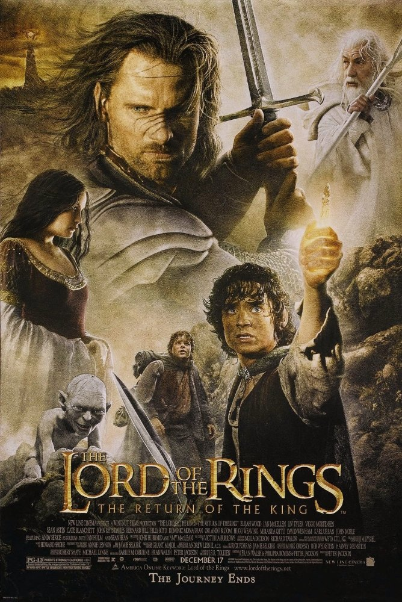

Four movies which I love

Title : Mother
A couple's relationship is tested when uninvited guests arrive at their home, disrupting their tranquil existence. Director: Darren Aronofsky Writer: Darren Aronofsky Stars: Jennifer Lawrence, Javier Bardem, Ed Harris

Title : Schindler's List
In German-occupied Poland during World War II, Oskar Schindler gradually becomes concerned for his Jewish workforce after witnessing their persecution by the Nazi Germans. Director: Steven Spielberg Stars: Liam Neeson, Ralph Fiennes, Ben Kingsley
Title : Lord Of The Rings
Release Date :2003 Gandalf and Aragorn lead the World of Men against Sauron's army to draw his gaze from Frodo and Sam
Home Page